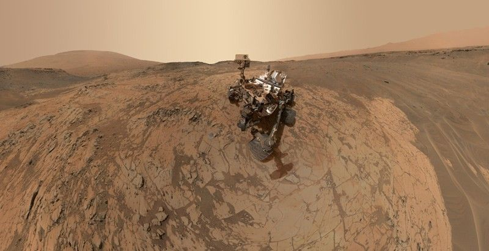

Curiosity
Could Mars once have supported microbial life? Curiosity studies the planet's rocks to help answer that question.

Mission Overview
Curiosity is part of NASA's Mars Science Laboratory mission. It explores Gale Crater to learn whether past conditions could have supported microbes.
- Launch: November 26, 2011
- Landing: August 6, 2012
- Landing site: Gale Crater, Mars
What Has It Discovered?
Curiosity found chemical and mineral evidence that Mars once had environments suitable for microbial life. This means conditions could have supported life, not that Curiosity found living things.
How It Studies Mars
Curiosity carries cameras, a drill, and instruments for studying rocks and soil. Its drill collects powdered rock for testing inside the rover.